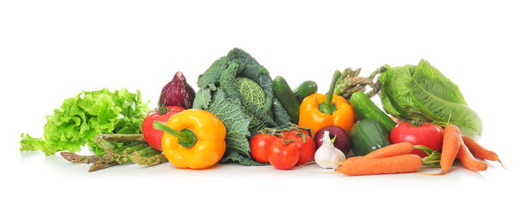
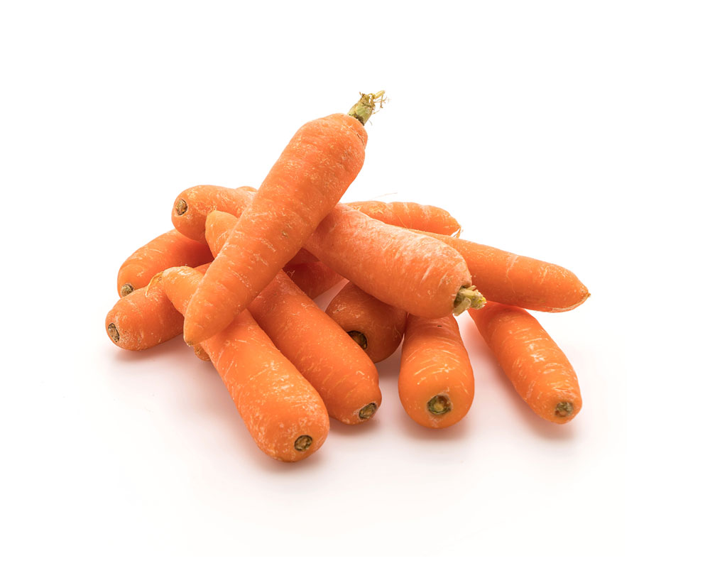
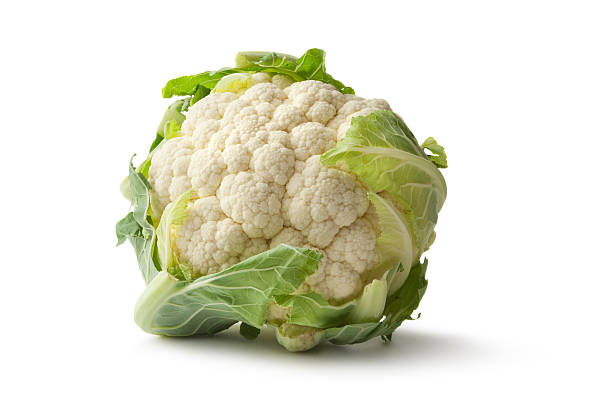
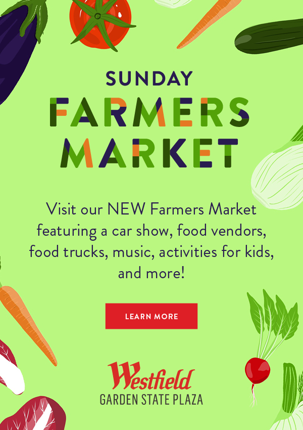
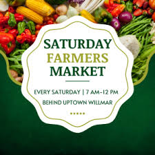
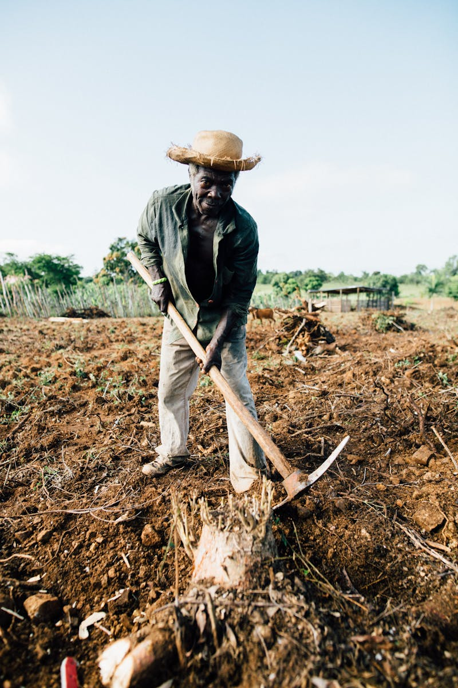
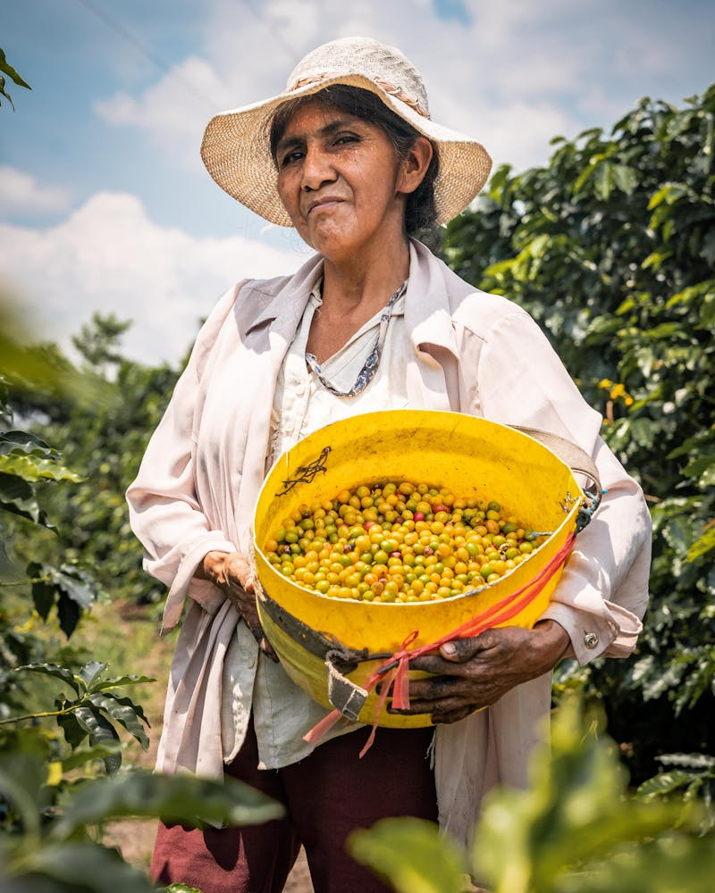

Welcome to The Green Orchard
At our Farmers Market, We prode ourselves on providing the freshest and finest locally sourced produce. Our market is more than just a place to shop, it's a community hub where farmers , artisans, and customers come together to celebrate local agriculture.
Read More

Discover the best local produce and handmade goods at our Green Orchard farmers market.
Our Products
Far far away, behind the word mountains, far from the countries Vokalia and Consonantia
30%

Bell Pepper
$120.00
$80.00

Strawberry
$120.00

Green Beans
$120.00

Purple Cabbage
$120.00

Tomato
$120.00

Broccoli
$120.00

Carrot
$120.00

Juice
$120.00

Cucumber
$120.00

Cauliflower
$120.00
Upcoming Events
Stay informed about our upcoming events and join us to learn more about organic farming and sustainable agriculture.

08 SEP, 2024
Sunday Farmers Market 2024
Join us for a comprehensive workshop on organic crop cultivation. Learn more about sustainable farming techniques, soil health, and crop management from industry experts.
Learn More →

12 OCT, 2024
Saturday Farmers Market 2024
Don't Miss our next session on organic farming practices. This event will cover everything from seed selection to post-harvest handling to ensure high-quality produce.
Learn More →
12 OCT, 2024
Saturday Farmers Market 2024
Don't Miss our next session on organic farming practices. This event will cover everything from seed selection to post-harvest handling to ensure high-quality produce.
Learn More →
12 OCT, 2024
Saturday Farmers Market 2024
Don't Miss our next session on organic farming practices. This event will cover everything from seed selection to post-harvest handling to ensure high-quality produce.
Learn More →Are you a customer trying to locate a market?
Our Recent Articles
30 Best Farmers Markets in the USA you must visit
South Georgian Bay Farmer's Markets 2023
Meet Our Seed Savers
Meet the Farmers | Nourishing the world from the roots. We're committed to nutrient-dense food and soil health through regenerative agriculture.

Aditya Milner
Location:Heritage Farm
Speciality:Leafy Greens & Herbs
Specializes in growing a wide range of leafy greens & herbs.

Eira Guzman
Location: Mountainview Farm
Speciality: Berries and Honey
Eira's farm is famous for its fresh berries and artisanal honey. She combines modern texhniques with traditional knowledge to produce the best quality products.
Become a part of Green Orchard Farmers Market
Register to receive daily updates, fresh produce and more!
What Our Customers say

"The Farmers Market is a fantastic place to find fresh, local produce. I always leave with a full basket and a smile on my face."
John Doe

"I love the variety of vendors at the market. There's always something new to discover and try."
Jane Smith

"The Farmers Market is a wonderful community event. It's great to support local farmers and artisans."
Emily Johnson
"I love the variety of vendors at the market. There's always something new to discover and try."
Jane Smith
"The Farmers Market is a wonderful community event. It's great to support local farmers and artisans."
Emily Johnson
SEND INQUIRY
Contact Us
Green Orchard Farmers Market, 456 street Road, Main Gate, opp. Calico Mill, Delhi-400 002, India.
📞 Phone : 079-2532 3634
✉️ Email : greenorchard@yahoo.com